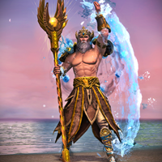
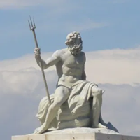

INDICAÇÕES
INDICAÇÕES
 GALERIA DE IMAGENS
GALERIA DE IMAGENS

Sou Poseidon, um dos deuses mais poderosos da mitologia grega. Filho de Cronos e Réia, sou irmão de Zeus
e Hades. Após a derrota de nosso pai, o mundo foi dividido entre nós três: Zeus governou o céu, Hades o
submundo e eu, os mares.
Carrego meu tridente, com ele faço tremer a terra, sou capaz de controlar as águas, acalmar os mares ou
desencadear tempestades devastadoras.
Também sou conhecido por causar terremotos e por minha ligação com os cavalos. Embora muitas vezes seja
retratado como temperamental e vingativo, sou essencial para a vida e fertilidade, além de ser um deus
que inspira tanto respeito quanto temor.

Poseidon é o deus dos mares, conhecido por seu temperamento imprevisível. Após a queda de Cronos, ele
recebeu o domínio sobre as águas, enquanto Zeus ficou com o céu e Hades com o submundo.
Uma das histórias mais famosas é a disputa com Atena pela cidade de Atenas. Poseidon ofereceu um cavalo,
símbolo de poder e guerra, enquanto Atena deu a oliveira, símbolo de paz. Os atenienses escolheram
Atena, o que enfureceu Poseidon e gerou várias vinganças.
Assim, Poseidon é associado aos terremotos, representando o poder destrutivo da natureza. Sua figura
também é marcada por inúmeros filhos e rivalidades com outros deuses e heróis, refletindo sua natureza
de criação e destruição.

Colônia fabricada pela Olympus

Poseidon no Guild Wars
Estátua do Poseidon - Las Palmas, Espanha
"Ocean Eyes" – Billie Eilish

Poseidon em arte digital

Percy Jackson e o Ladrão de Raios